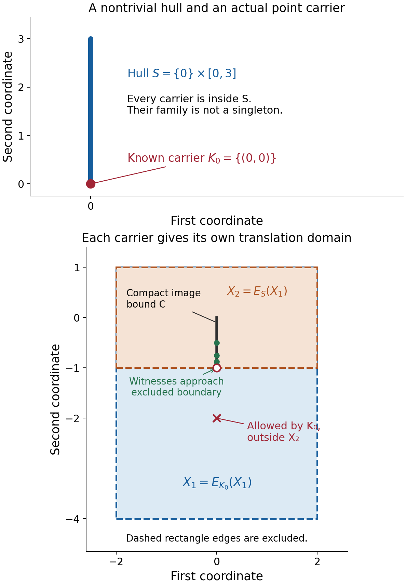
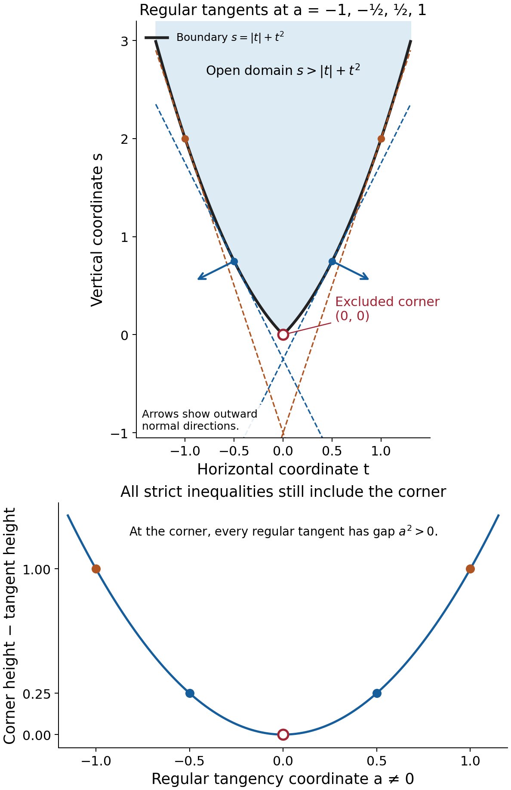

Learning to choose convex convolution domains
Written by GPT-6.1 Sol (OpenAI), Ultra reasoning effort, October 2026. Self-checked by the writing AI, GPT-6.1 Sol (OpenAI). Public domain (CC0).
A logarithmic Fourier carrier describes the singular geometry visible along one escaping frequency sequence. An equation must accommodate every carrier, even when they differ from the kernel's combined singular hull. Convexity turns this requirement into a test of translated compact sets. Supporting planes then identify which boundary directions matter.
Basic references are Grubb's Fourier-distribution notes, Melrose's differential-analysis course, and Hörmander's The Analysis of Linear Partial Differential Operators, volumes I and II. The accompanying formal chapter proves the convex separation, regular-boundary reconstruction and full domain criteria. Use Recovering singularities from convolution profiles for exact one-point singularity realizations, Isolated atoms and maxima of Fourier profiles for the finite-support singleton theorem, and Convolution modulo smooth functions and compact singularity bounds for the compact singularity condition.
1. Containment uses every point of a carrier
Let \(\mu\) be a compact invertible kernel and
\[ S=\operatorname{conv}(\operatorname{sing\,supp}\mu). \tag{E1.1} \]Its nonempty compact convex profile carriers form a family \(\mathcal K(\mu)\). Each \(K\) lies in \(S\), and
\[ H_S(\eta)=\sup_{K\in\mathcal K(\mu)}H_K(\eta). \tag{E1.2} \]The hull combines the carriers; it need not itself be the only carrier.
Take nonempty open convex \(X_1,X_2\), where \(X_1\) is the domain of the unknown and \(X_2\) is the domain of the equation. Singular sampling requires \(X_2-S\subset X_1\). For one carrier define
\[ E_K(X_1)=\{x:x-K\subset X_1\}. \tag{E1.3} \]For a compact \(K\), this is open because the compact set \(x-K\) has a positive margin inside \(X_1\). It is convex because the containment is preserved along line segments.
The exact profile-domain criterion is
\[ (X_1,X_2)\text{ is convex for singular supports} \quad\Longleftrightarrow\quad E_K(X_1)\subset X_2\quad\text{for every }K. \tag{E1.4} \]Compatibility already gives \(X_2\subset E_K(X_1)\). Thus the criterion says \(E_K(X_1)=X_2\) for every carrier, not just for the hull.
Here singular-support convexity means that every compact image-singularity bound inside \(X_1\) has a compact input-singularity bound inside \(X_2\), for the adjoint convolution \(\check\mu*v\) with \(v\in\mathcal E'(X_2)\). The reflected kernel has carriers \(-K\). A selected singularity at \(x\) can therefore have image hull \(x-K\). Theorem 4.1 of the formal chapter uses this exact realization for necessity. For sufficiency it bounds all the sets \(E_K(C)\), for a fixed compact \(C\subset X_1\), and applies the full inverse carrier criterion. The positive boundary margin survives the convex hull and its closure.
Keep the translation domain separate from the Minkowski difference
\[ X_1-K=\{u-k:u\in X_1,\ k\in K\}. \tag{E1.5} \]Expression (E1.5) chooses one pair of points. Expression (E1.3) requires every point of \(x-K\) to lie inside \(X_1\).
If the carrier family is the singleton \(\{S\}\), the largest admissible equation domain for a fixed convex \(X_1\) is \(E_S(X_1)\). Conversely, for every nonempty open convex \(U\),
\[ X_2=U,\qquad X_1=U-S \quad\Longrightarrow\quad E_S(X_1)=U. \tag{E1.6} \]The separation argument in Lemma 2.2 proves this identity, including unbounded \(U\).
2. The boundary test uses the reflected normal
A regular boundary point has one outward normal ray. The formal chapter proves that such points are dense by constructing a local convex graph and using the Baire theorem on its one-sided derivative gaps. It also proves that their closed supporting halfspaces recover the closure of the domain, and taking the interior recovers the open domain.
At a regular boundary point of \(X_2\) with unit outward normal \(\nu\), singular-support convexity requires
\[ H_K(-\nu)=H_S(-\nu)\quad\text{for every carrier }K. \tag{E2.1} \]The minus sign comes from the sampled point \(x-k\). In the outward direction \(\nu\), that sample has scalar product \(\nu\cdot x-\nu\cdot k\). Its largest possible value is \(\nu\cdot x+H_K(-\nu)\).
Conversely, let \(U\) be nonempty, proper, open and convex. If every regular outward normal of \(U\) satisfies (E2.1), then
\[ X_2=U,\qquad X_1=U-S \tag{E2.2} \]is convex for singular supports. Theorem 7.1 proves this by placing each open \(E_K(X_1)\) inside all the closed regular supporting halfspaces, and then inside the interior of their intersection.
Only normals that occur on this boundary are tested. Agreement in those directions need not make the carrier family a singleton.
3. Four worked examples
Example 1. Two atoms and an exact rectangular domain
Set
\[ \mu=\delta_{(-1,0)}+2\delta_{(2,0)},\qquad S=[-1,2]\times\{0\},\qquad U=(-2,3)\times(-1,2). \tag{E3.1} \]Every support point is isolated and singular. Corollary 3.2 of the isolated-atoms lesson gives invertibility and the singleton carrier family \(\{S\}\), even though a finite-support kernel can have Fourier zeros.
The unknown domain prescribed by (E1.6) is
\[ X_1=U-S=(-4,4)\times(-1,2). \tag{E3.2} \]Indeed the horizontal Minkowski difference of the open interval \((-2,3)\) with the closed interval \([-1,2]\) is \((-4,4)\). The second coordinate is unchanged.
The condition \(x-S\subset X_1\) is
\[ x_1-2>-4,\qquad x_1+1<4,\qquad -1<x_2<2. \tag{E3.3} \]Thus \(E_S(X_1)=(-2,3)\times(-1,2)=U\), and the pair is convex for singular supports.
The adjoint illustrates the reflection: for \(v=\delta_y\),
\[ \check\mu*v=\delta_{y+(1,0)}+2\delta_{y-(2,0)}. \tag{E3.4} \]Its singular hull is \(y-S\). The coefficient \(2\) remains \(2\); a complex coefficient would also remain unchanged under the bilinear transpose.
Example 2. The whole singular hull can hide a smaller carrier
Define a normalized smooth bump
\[ g(t)= \begin{cases} c\exp[-1/((t-2)(3-t))],&2<t<3,\\ 0,&t\notin(2,3), \end{cases} \qquad \int_{\mathbb R}g(t)\,dt=1. \tag{E3.5} \]The positive constant \(c\) exists because the unnormalized bump has positive finite integral. Every endpoint derivative of its zero extension is zero: differentiating gives the same exponential times reciprocal polynomial powers, which the exponential dominates. Thus \(g\) is smooth, positive on \((2,3)\), and supported exactly in \([2,3]\).
On \(\mathbb R^2\), put
\[ \mu=\delta_{(0,0)}+\tfrac15\,\delta_0\otimes g,\qquad F_\mu(\zeta_1,\zeta_2)=1+\tfrac15F_g(\zeta_2). \tag{E3.6} \]On real frequencies \(|F_g|\le\int g=1\), so \(|F_\mu|\ge4/5\). This gives slow decrease and invertibility. Its singular support is \(\{(0,0)\}\cup(\{0\}\times[2,3])\). Where \(g\ne0\), a distribution supported on the vertical line is nonzero and cannot be a smooth function: a smooth function supported on a line must vanish. The endpoints remain singular since every neighborhood contains an interior singular point. Near the origin the separated point mass remains singular. Consequently
\[ S=\{0\}\times[0,3]. \tag{E3.7} \]There is an actual point carrier \(K_0=\{(0,0)\}\). To prove this, take escaping centers \(c_j=(e^{2j},e^j)\), and \(q_j=|c_j|\). On \(|z|\le M\), for all sufficiently large \(j\),
\[ |e^j+z_2\log q_j|\ge q_j^{1/2}/4,\qquad |\operatorname{Im}(z_2\log q_j)|\le M\log q_j. \tag{E3.8} \]Repeated integration by parts in \(g\), with no endpoint terms, gives for any integer \(k\ge0\)
\[ |F_g(e^j+z_2\log q_j)| \le4^k\|g^{(k)}\|_1q_j^{-k/2+3M}. \tag{E3.9} \]Choose \(k>6M\). The right side tends to zero uniformly on the parameter compact set. Hence \(F_\mu(c_j+z\log q_j)\to1\), and its normalized logarithm tends uniformly to zero. This proper profile has zero indicator, with carrier \(K_0\). Since the carriers' combined hull is the nontrivial \(S\), at least one other carrier differs from \(K_0\). We do not need a formula for the entire family.
Now prescribe
\[ X_2=(-2,2)\times(-1,1),\qquad X_1=X_2-S=(-2,2)\times(-4,1). \tag{E3.10} \]The hull passes the containment test: \(E_S(X_1)=X_2\). But
\[ E_{K_0}(X_1)=X_1\not\subset X_2. \tag{E3.11} \]For example \((0,-2)\) belongs to the left side. The full family criterion therefore fails.
This failure has actual compact singularity witnesses. Let \(y_j=(0,-1+2^{-j})\), \(j\ge1\), and fix \(C=\{0\}\times[-1,0]\Subset X_1\). The reflected point carrier is still \(K_0\). The exact realization theorem supplies \(v_j\) with arbitrarily small support inside \(X_2\), singular exactly at \(y_j\), and image hull \(y_j-K_0=\{y_j\}\subset C\). The image singular support is this singleton: its hull is nonempty and a singleton. All the input singularities approach the excluded boundary \((0,-1)\), so no compact subset of \(X_2\) contains them.
The boundary sign agrees with this obstruction. At the lower edge the outward normal is \(\nu=(0,-1)\); its reflection is \(-\nu=(0,1)\). Then
\[ H_{K_0}(-\nu)=0,\qquad H_S(-\nu)=3. \tag{E3.12} \]At the upper edge, \(\nu=(0,1)\), both reflected support values are zero. Testing \(+\nu\) at the lower edge would miss its obstruction.

Figure 1. For the kernel (E3.6), the known carriers include \(K_0=\{0\}\), and all carriers lie in the vertical hull \(S=\{0\}\times[0,3]\). The diagram does not claim that \(S\) itself is an actual profile carrier. The domains and sampled points have the exact coordinates in (E3.10); dashed rectangle edges are excluded. The witnesses \(y_j=(0,-1+2^{-j})\), \(j=1,\ldots,5\), lie in the fixed compact image bound \(C\) but approach the equation boundary. Proof locators: formal Theorem 4.1 and Theorem 6.1; Example 2 and Exercise 5. Background: Hörmander's convolution-domain geometry.
Example 3. Several carriers work on the same unbounded strip
Keep the kernel of Example 2 but take
\[ U=(-2,2)\times\mathbb R. \tag{E3.13} \]Every nonempty carrier lies on the vertical segment \(S\). Subtracting any such carrier affects only the unrestricted vertical coordinate. Thus
\[ U-S=U,\qquad E_K(U)=U\quad(K\in\mathcal K(\mu)). \tag{E3.14} \]The pair \(X_1=X_2=U\) is convex for singular supports by Theorem 4.1.
The only unit outward normals at boundary points are \((1,0)\) and \((-1,0)\). Every carrier has support value zero in either horizontal direction. Hence the normal test succeeds despite the differing point and nonpoint carriers. Their unequal vertical support values are irrelevant to this strip because its boundary has no vertical normal.
This gives a proper unbounded domain to which the converse applies. It also explains why the normal condition is restricted to the normals of the prescribed domain.
Example 4. Strict regular-plane inequalities need an interior step
Let
\[ f(t)=|t|+t^2,\qquad U=\{(t,s):s>f(t)\}. \tag{E3.15} \]This is nonempty, proper, open and convex. At \(a\ne0\), the boundary point \(q_a=(a,f(a))\) is regular, with slope \(p_a=\operatorname{sgn}(a)+2a\) and outward unit normal
\[ \nu_a=\frac{(p_a,-1)}{\sqrt{1+p_a^2}}. \tag{E3.16} \]Its closed supporting halfspace is
\[ s\ge p_at-a^2. \tag{E3.17} \]Indeed
\[ f(t)-(p_at-a^2) =(t-a)^2+|t|-\operatorname{sgn}(a)t\ge0. \tag{E3.18} \]Equality holds at \(t=a\).
At the corner \((0,0)\), every one of (E3.17) is strict, since \(0>-a^2\). The corner nevertheless does not belong to \(U\). Its outward normals have directions \((p,-1)\), \(-1\le p\le1\), rather than one ray.
The supremum of the tangent values \(p_at-a^2\) over \(a\ne0\) equals \(f(t)\): for \(t\ne0\), take \(a=t\); for \(t=0\), take \(a\to0\). Thus the intersection of all the closed regular halfspaces is exactly \(\{s\ge f(t)\}=\overline U\). Taking its interior gives \(U\). Theorem 7.1 correctly uses this interior step, together with openness of \(E_K(X_1)\).

Figure 2. The graph and the four tangents at \(a=-1,-1/2,1/2,1\) are exact. The shaded region above the graph is the open domain; its boundary is excluded. The marked corner satisfies strictly every regular tangent inequality, not only the four drawn, but remains a boundary point. Outward normal arrows at \(a=\pm1/2\) use (E3.16). Proof locators: formal Lemmas 3.1–3.2 and Theorem 7.1; Example 4 and Exercise 7. Background: convex supporting-plane geometry in Hörmander's solvability theory.
4. Exercises and full solutions
The ten exercises total 100 points. Each includes a complete solution.
Exercise 1 (10 points). Take \(U=(-3,5)\times(-2,4)\) and \(K=[-1,2]\times[-1/2,1/2]\). Compute \(E_K(U)\) and \(U-K\), with correct endpoint conventions. Explain the difference.
Solution. The containment of the first coordinate interval \(x_1-[-1,2]=[x_1-2,x_1+1]\) in \((-3,5)\) requires \(x_1-2>-3\) and \(x_1+1<5\), hence \(-1<x_1<4\). Similarly \(-3/2<x_2<7/2\). Therefore
\[ E_K(U)=(-1,4)\times(-3/2,7/2). \tag{E4.1} \]The independent coordinate differences give
\[ U-K=(-5,6)\times(-5/2,9/2). \tag{E4.2} \]All endpoints are excluded because an extremum in the closed \(K\) would have to meet an excluded endpoint of \(U\). The translation domain requires the entire shifted \(K\) to fit, whereas the difference set allows one chosen pair. For example \((5,0)\) is in the difference set but not the translation domain.
Exercise 2 (10 points). Let \(a=(1/2,-1/4)\), \(\mu=i\delta_a\), and \(X_2=(-1,2)\times(-2,1)\). Choose \(X_1=X_2-\{a\}\). Compute \(X_1\), the reflected kernel, the adjoint image of \(\delta_p\), and the compact singularity distance identity.
Solution. Coordinate translation gives
\[ X_1=(-3/2,3/2)\times(-7/4,5/4),\qquad \check\mu=i\delta_{-a},\qquad \check\mu*\delta_p=i\delta_{p-a}. \tag{E4.3} \]The bilinear transpose reflects the point and retains the coefficient \(i\). There is no complex conjugation. The nonzero one-point kernel has singleton carrier \(\{a\}\). Thus \(E_{\{a\}}(X_1)=X_1+a=X_2\), proving singular-support convexity. For any compact test distribution \(v\), the nonzero coefficient does not change its singular set, and translation gives
\[ \operatorname{sing\,supp}(\check\mu*v) =\operatorname{sing\,supp}v-a. \tag{E4.4} \]The complements satisfy \(X_1^c=X_2^c-a\); Euclidean distances are translation invariant. Therefore the two singular-set distances to their respective complements are equal. If \(v\) is smooth, both singular sets are empty and both distances are infinite.
Exercise 3 (10 points). Use the two-atom kernel and the domains of Example 1. If the image singular support is confined to \(C=[-3,3]\times[-1/2,3/2]\), find a sharp compact receiver for the input singularities. Check its boundary margin.
Solution. The reflected carrier is \(-S\). The inverse criterion requires every \(y\) with \(y-S\subset C\) to lie in the receiver. The horizontal endpoint conditions are \(y_1-2\ge-3\), \(y_1+1\le3\); the vertical coordinate stays unchanged. Thus
\[ K_2=E_S(C)=[-1,2]\times[-1/2,3/2]. \tag{E4.5} \]This nonempty compact convex set lies inside \(X_2=(-2,3)\times(-1,2)\). The inverse carrier theorem proves that it receives every input singularity under the stated image bound.
It is sharp: for every \(y\in K_2\), the input \(v=\delta_y\) has the two distinct image singularities \(y+(1,0)\), \(y-(2,0)\) inside \(C\). Its input singularity is \(y\), so a universal receiver must include that point. The distance of \(K_2\) from \(X_2^c\) is \(1/2\), reached on its horizontal edges; the distance of \(C\) from \(X_1^c\) is also \(1/2\). Here “horizontal edges” refers to the edges at second-coordinate heights \(-1/2,3/2\), rather than the vertical edges whose margin is \(1\).
Exercise 4 (10 points). Explain why a compact smooth nonzero kernel cannot be used as the nonempty singleton-carrier case of Corollary 5.1, even on the whole space. Show that its compact singularity confinement condition fails.
Solution. Smoothness makes its singular support and singular hull empty. Repeated integration by parts gives a rapidly decreasing real Fourier transform. For any proposed real slow-decrease window constant \(A\), the frequencies in a logarithmic window about a sufficiently large center have norm at least half the center norm. A decay estimate of order \(N>A\) then makes the maximum on that window smaller than its required polynomial lower bound. Thus the kernel is not invertible, by the real-window characterization in the preceding slow-decrease lesson. Its profiles all collapse, so its singleton indicator is \(-\infty\), not a support function of a nonempty compact carrier.
More directly, for every \(y\), the compact input \(\delta_y\) has smooth adjoint image \(\check\mu*\delta_y\), a translated smooth function. On \(X_1=X_2=\mathbb R^n\), all these images satisfy the empty compact singularity bound, while their input singularities range over all \(y\in\mathbb R^n\). No compact receiver exists. The nonsmooth, proper-indicator hypothesis in Corollary 5.1 cannot be dropped.
Exercise 5 (10 points). For Example 2, prove directly that \(C=\{0\}\times[-1,0]\) has no compact singularity receiver in \(X_2\). Specify how to choose compactly supported witnesses rather than merely drawing points.
Solution. The proper zero profile of \(\mu\) gives the point carrier \(K_0\). Reflection keeps this carrier fixed. For \(y_j=(0,-1+2^{-j})\), use the exact reflected one-point realization with a support radius less than \(2^{-j-2}\). This ball is inside \(X_2\): its radius is less than half the distance \(2^{-j}\) to the lower edge, and the other three edge distances are larger. The supplied \(v_j\) is compactly supported in that ball and singular exactly at \(y_j\). Its reflected image has singular hull \(\{y_j\}\), so its nonempty singular support is exactly \(\{y_j\}\subset C\).
If a compact \(K_2\subset X_2\) received every input, the continuous function \(x\mapsto x_2+1\) would have a positive minimum \(\varepsilon\) on the nonempty \(K_2\). Choose \(j\) with \(2^{-j}<\varepsilon\). Then \(y_j\notin K_2\), a contradiction. An empty receiver fails already for \(v_1\). This verifies the distributional confinement failure with actual witnesses.
Exercise 6 (10 points). For the kernel of Example 2, compare the strip \(U=(-2,2)\times\mathbb R\) with the unit disk as prescribed equation domains. Can either be part of a compatible convex singular-support pair? Explain what the normal test says without assuming a full formula for the carrier family.
Solution. In the strip, all unit boundary normals are horizontal. Every nonempty carrier lies on \(S=\{0\}\times[0,3]\), so \(H_K(\pm e_1)=0=H_S(\pm e_1)\). Theorem 7.1 gives the pair \(X_1=U-S=U\), \(X_2=U\).
For the unit disk, every boundary point is regular and every unit vector occurs as an outward normal. Any compatible convex singular-support pair with that disk as \(X_2\) would, by Theorem 6.1, have \(H_K(\eta)=H_S(\eta)\) for every unit \(\eta\), and then for every real \(\eta\) by positive homogeneity. Equality of support functions would force \(K=S\). But the established point carrier \(K_0=\{0\}\) differs from \(S\); already at the bottom boundary, \(-\nu=e_2\) has support values \(0\) and \(3\). Thus no such convex pair exists for the disk. This conclusion is specific to its normals and does not assert that every bounded convex domain has all directions as regular normals.
Exercise 7 (10 points). For \(f(t)=|t|+t^2\), prove that the corner satisfies all strict regular tangent inequalities but is outside the open epigraph. Then compute the closed halfspace intersection.
Solution. For every \(a\ne0\), differentiation gives \(p_a=\operatorname{sgn}(a)+2a\), and \(f(a)-p_aa=-a^2\). The nonnegative gap in (E3.18) proves the supporting inequality \(s\ge p_at-a^2\). At \((t,s)=(0,0)\), it is strict since \(0>-a^2\). The corner is outside \(U\) because its defining inequality would read \(0>f(0)=0\).
For \(t\ne0\), the tangent with \(a=t\) attains \(f(t)\); all other tangent values are at most \(f(t)\). For \(t=0\), their values \(-a^2\) have supremum zero. Hence
\[ \sup_{a\ne0}(p_at-a^2)=|t|+t^2,\qquad \bigcap_{a\ne0}\{s\ge p_at-a^2\}=\{s\ge f(t)\}. \tag{E4.6} \]Continuity of \(f\) makes the interior of the last set exactly \(s>f(t)\). Strict satisfaction of infinitely many inequalities can fail to define an open set, as this corner demonstrates.
Exercise 8 (10 points). Let \(f(x_1,x_2)=|x_1|+2|x_2|+x_1^2+x_2^2\). Find its regular graph points, outward normals there, and all normal rays at the origin. Verify density of regular boundary points in this example.
Solution. When both coordinates are nonzero, the gradient is
\[ p=(\operatorname{sgn}x_1+2x_1,\; 2\operatorname{sgn}x_2+2x_2). \tag{E4.7} \]The graph point has the unique outward unit normal \((p,-1)/\sqrt{1+|p|^2}\). If \(x_1=0\), the first one-sided derivative gap is \(2\); if \(x_2=0\), the second gap is \(4\). There are then at least two subgradients, so the supporting-normal ray is not unique. Thus the regular graph points are exactly those with both coordinates nonzero. They are dense because any coordinate can be perturbed by an arbitrarily small nonzero amount, and continuity of \(f\) makes the graph points converge.
At the origin, \(|x_1|\ge p_1x_1\) for all \(x_1\) exactly when \(-1\le p_1\le1\), and \(2|x_2|\ge p_2x_2\) exactly when \(-2\le p_2\le2\). Adding the nonnegative quadratic terms proves these are subgradients. Conversely coordinate testing with arbitrarily small positive and negative coordinates gives those same necessary intervals. All normal rays are therefore
\[ \mathbb R_{>0}(p_1,p_2,-1),\qquad (p_1,p_2)\in[-1,1]\times[-2,2]. \tag{E4.8} \]The local graph/subgradient correspondence in Lemma 3.1 proves that none are missing.
Exercise 9 (10 points). Let \(C\Subset X_1\) be nonempty compact and convex, and choose \(0<\delta\le d(C,X_1^c)\). Suppose every \(E_K(X_1)\) lies in a convex open \(X_2\), and the nonempty carriers all lie in one compact convex \(S\). Prove that, when \(D=\bigcup_KE_K(C)\) is nonempty, \(\overline{\operatorname{conv}D}\) is a compact subset of \(X_2\) with boundary distance at least \(\delta\).
Solution. For \(x\in E_K(C)\), choose any \(k\in K\subset S\). Then \(x-k\in C\), so \(x\in C+S\). This Minkowski sum is compact, as a continuous image of \(C\times S\), and convex. It contains \(D\) and its closed convex hull, making that hull compact.
For \(|h|<\delta\), the containment \(C+h\subset X_1\) holds by the chosen boundary distance. Thus \(x+h-K\subset X_1\), so \(x+h\in E_K(X_1)\subset X_2\). For a finite convex combination \(z=\sum_i\lambda_ix_i\) of points of \(D\), use the same \(h\) at each point:
\[ z+h=\sum_i\lambda_i(x_i+h)\in X_2. \tag{E4.9} \]Hence \(d(z,X_2^c)\ge\delta\). Distance to a nonempty closed set is continuous, since the triangle inequality gives a Lipschitz constant one. Passing to the closure keeps that bound. A positive distance excludes every point of \(X_2^c\), so the compact closed hull is inside \(X_2\). If \(X_2^c\) is empty, all these distances are infinite and the conclusion is immediate.
Exercise 10 (10 points). Take the open halfspace \(U=\{x:\nu\cdot x<\alpha\}\), with \(\nu\ne0\). Compute \(U-S\) and \(E_K(U-S)\). Deduce the exact normal condition for \(X_2=U\), \(X_1=U-S\).
Solution. Compactness gives \(s_0\in S\) minimizing \(\nu\cdot s\). For every \(u\in U,s\in S\), \(\nu\cdot(u-s)<\alpha+H_S(-\nu)\). Conversely, if \(z\) satisfies this strict inequality, then \(u=z+s_0\) has \(\nu\cdot u<\alpha\) and \(z=u-s_0\). Therefore
\[ U-S=\{z:\nu\cdot z<\alpha+H_S(-\nu)\}. \tag{E4.10} \]Every \(x-k\) is in this set precisely when its maximum scalar product is below the threshold. Since \(K\) is compact, that maximum is attained and equals \(\nu\cdot x+H_K(-\nu)\). Thus
\[ E_K(U-S) =\{x:\nu\cdot x< \alpha+H_S(-\nu)-H_K(-\nu)\}. \tag{E4.11} \]Because \(K\subset S\), the added term is nonnegative. This halfspace equals \(U\) if and only if it is zero. The family criterion therefore requires \(H_K(-\nu)=H_S(-\nu)\) for every carrier, exactly the reflected-normal condition. If the added term were positive, a point with scalar product strictly between the two thresholds would be in \(E_K(U-S)\) but outside \(U\). This computation covers any dimension and the unbounded halfspace directly.
References
- Gerd Grubb, Distributions and Operators, Chapter 5, “Fourier transformation of distributions,” freely readable lecture notes.
- Richard B. Melrose, Differential Analysis, MIT OpenCourseWare, Fall 2004, freely readable course materials.
- Lars Hörmander, The Analysis of Linear Partial Differential Operators I: Distribution Theory and Fourier Analysis, second edition, Springer, 1990.
- Lars Hörmander, The Analysis of Linear Partial Differential Operators II: Differential Operators with Constant Coefficients, Springer, 1983.
- Full profile realization and finite-support proofs are in the preceding lessons linked above. The accompanying formal chapter proves the exact domain-family criterion, regular boundary geometry and reflected-normal converse used here.
Complete proof
One compact kernel can have several different logarithmic Fourier carriers. Its convex singular hull records their combined extent, but a domain supporting arbitrary singularity classes must accommodate each carrier separately. We prove the exact family criterion and show how it becomes an equality of support values at differentiable boundary normals. The converse requires a geometric fact that we prove here: regular supporting planes recover every proper open convex domain.
Basic references are Grubb's Fourier-distribution notes, Melrose's differential-analysis course, and Hörmander's The Analysis of Linear Partial Differential Operators, volumes I and II. Theorem 2.1, Corollary 2.2 and Theorem 3.1 of Recovering singularities from convolution profiles prove the arbitrarily small isolated-singularity realization and the full inverse carrier criterion. Its equation (1.3) recovers the singular hull from the carrier family. Theorem 3.2 and Definition 3.3 of Convolution modulo smooth functions and compact singularity bounds supply compact singularity confinement and its boundary-distance meaning.
Finite-dimensional compactness, scalar completeness and coordinate calculus are proved in Metric and topological foundations. The complete-metric Baire theorem is Section 6 of Banach estimates, quotient spaces and compact parameter arguments. Compactness of the convex hull of a compact Euclidean set is proved in the proof of Theorem CF4.1 of Compact Fourier division and multiplicity-sensitive annihilators. We supply all the additional convex boundary and domain arguments below.
1. The family of compact carriers
Let \(\mu\) be a compact invertible distribution on \(\mathbb R^n\), \(n\ge1\). Put
\[ S=\operatorname{conv}(\operatorname{sing\,supp}\mu). \tag{1.1} \]It is nonempty and compact. An invertible compact distribution is nonsmooth, by the slow-decrease characterization in Slow decrease and entire Fourier division. Let \(\mathcal K(\mu)\) be the compact convex carriers whose support functions are the indicators of its logarithmic Fourier profiles. Invertibility excludes collapsed profiles, so every member is nonempty. The preceding hull theorem gives
\[ K\subset S\quad(K\in\mathcal K(\mu)),\qquad S=\overline{\operatorname{conv}\bigcup_{K\in\mathcal K(\mu)}K}, \qquad H_S(\eta)=\sup_{K\in\mathcal K(\mu)}H_K(\eta). \tag{1.2} \]Here \(H_K(\eta)=\max_{k\in K}k\cdot\eta\).
Reflection has the exact effect
\[ \mathcal K(\check\mu)=\{-K:K\in\mathcal K(\mu)\}. \tag{1.3} \]Indeed \(F_{\check\mu}(\zeta)=F_\mu(-\zeta)\). Replacing an escaping center \(c\) and profile variable \(z\) by \(-c,-z\) preserves the denominator \(\log|c|\) and gives the reflected profile. Its indicator is \(H_K(-\eta)=H_{-K}(\eta)\). Applying reflection twice proves both inclusions in (1.3).
For an open \(U\) and nonempty compact \(K\), define the translation domain
\[ E_K(U)=\{x:x-K\subset U\}. \tag{1.4} \]This is not the ordinary Minkowski difference \(U-K=\{u-k:u\in U,k\in K\}\). The former requires containment for every point of \(K\); the latter uses one chosen point.
2. Elementary convex separation and translation domains
Lemma 2.1 (supporting planes for open convex sets). If \(U\) is nonempty, proper, open and convex, then
\[ \operatorname{int}\overline U=U. \tag{2.1} \]Every \(x\notin U\) has a nonzero \(\nu\) and a finite \(\beta\) with
\[ \nu\cdot u<\beta\le\nu\cdot x\quad(u\in U). \tag{2.2} \]At \(x\in\partial U\), one can take \(\beta=\nu\cdot x\).
Proof. Convexity passes to \(C=\overline U\) by taking limits of line segments. If \(x\in\operatorname{int}C\), place a small simplex about \(x\) inside that interior: in translated coordinates take the vertices \(\varepsilon e_i\), \(1\le i\le n\), and \(-\varepsilon\sum_i e_i\). Its barycentric coordinates at \(x\) are all \(1/(n+1)\). Approximate each vertex by points of \(U\). For sufficiently close approximations, the matrix determining barycentric coordinates stays invertible and those coordinates stay positive, by determinant continuity and finite linear algebra. Thus \(x\) lies in the convex hull of points of \(U\), so \(x\in U\). This proves (2.1).
For \(x\notin C\), choose a nearest point \(p\in C\). Existence follows by restricting distance minimization to a sufficiently large closed ball, then using compactness. For every \(z\in C\), the segment \(p+t(z-p)\) lies in \(C\). Comparing its squared distance from \(x\) with the minimum at \(p\), dividing by \(t>0\), and letting \(t\downarrow0\), gives
\[ (x-p)\cdot(z-p)\le0. \tag{2.3} \]The vector \(x-p\) is nonzero. Set \(\nu=x-p\), \(\beta=\nu\cdot p\). The inequality is strict on \(U\), since equality at an interior point would be violated by a small displacement in direction \(\nu\). Also \(\beta<\nu\cdot x\).
For \(x\in\partial C=\partial U\), choose \(x_j\notin C\) tending to \(x\). Its nearest points \(p_j\) tend to \(x\), since \(|x_j-p_j|\le|x_j-x|\). Normalize the vectors \(x_j-p_j\); compactness of the unit sphere gives a convergent subsequence with unit limit \(\nu\). Pass (2.3) to the limit for each \(z\in C\): \(\nu\cdot(z-x)\le0\). Strictness on \(U\) follows as before. Taking \(\beta=\nu\cdot x\) proves the boundary assertion and (2.2). The nearest-point and boundary arguments also prove that \(C\) is proper: if \(C=\mathbb R^n\), (2.1) would give \(U=\mathbb R^n\). \(\square\)
Lemma 2.2 (compact translation domains). The set \(E_K(U)\) is open. If \(U\) is convex, it is convex. If \(C,K\) are nonempty compact convex sets, then \(E_K(C)\) is compact and convex, possibly empty. For nonempty open convex \(U\),
\[ E_K(U-K)=U. \tag{2.4} \]Proof. For \(x-K\subset U\), its compactness gives a positive boundary margin, hence all sufficiently small translations of \(x\) still have the containment. If \(U=\mathbb R^n\) the assertion is immediate. Convexity follows by applying it pointwise for each \(k\in K\), or by taking the intersection of the convex sets \(U+k\).
The compact version is \(\bigcap_{k\in K}(C+k)\), a closed convex set contained in \(C+k_0\) for any \(k_0\in K\). It is therefore bounded and compact.
The forward inclusion in (2.4) follows directly from the Minkowski difference. If \(U\) is proper and \(x\notin U\), choose \(\nu,\beta\) from Lemma 2.1 and choose \(k_0\in K\) minimizing \(\nu\cdot k\). Every \(y\in U-K\) satisfies
\[ \nu\cdot y<\beta+H_K(-\nu). \tag{2.5} \]But \(\nu\cdot(x-k_0)\ge\beta+H_K(-\nu)\), so \(x-k_0\notin U-K\). Thus \(x\notin E_K(U-K)\). The whole-space case of (2.4) is immediate. \(\square\)
3. Regular supporting planes recover the domain
A boundary point is regular if it has exactly one outward supporting-normal ray. In a local convex graph, this is the condition that the graph be differentiable there. We now prove the required density and reconstruction without assuming a measure-theoretic differentiability theorem.
Lemma 3.1 (dense regular boundary points). Regular points are dense in the boundary of every nonempty proper open convex \(U\subset\mathbb R^n\).
Proof, local graph. At a boundary point move the point to zero, choose \(q\in U\), and rotate coordinates so \(q=(0,a)\), \(a>0\). Choose a ball \(B_r(q)\subset U\), with \(r<a\). A supporting vector at zero from Lemma 2.1 has negative last coordinate, since its scalar product with \(q\) is negative. Its inequality therefore gives a finite affine lower bound on the last coordinate along each vertical line.
For \(|y|<r\), the vertical line at \(y\in\mathbb R^{n-1}\) meets \(U\) at height \(a\). Define \(f(y)\) as the infimum of its interval of heights in \(U\). It is finite by the supporting lower bound and is at most \(a\). Convexity of \(U\), using heights slightly above the infima, makes \(f\) convex. Also \(f(0)=0\). The supporting inequality bounds it below by zero. For \(0<\lambda<1\), convexity of \(\overline U\), the point \(0\in\overline U\), and the ball \(B_r(q)\subset U\) give \(B_{\lambda r}(\lambda q)\subset\overline U\). Lemma 2.1 puts this open ball in \(U\). Its center has height \(\lambda a\), arbitrarily close to zero.
On a smaller horizontal ball the function is Lipschitz. Its affine lower bound and the bound \(a\) give a finite oscillation on \(|y|<3r/4\). For two points in \(|y|<r/4\), extend the line through them in either direction by distance \(r/2\), staying in that larger ball. The monotonic secant slopes of a convex one-variable restriction bound the difference quotient between the two points by the oscillation divided by \(r/2\). This proves a finite Lipschitz constant. In a sufficiently small neighborhood of zero, the boundary of \(U\) is exactly the graph \(t=f(y)\): the vertical section is an interval, its lower endpoint is \(f(y)\), and the ball at \(q\) gives an upper interval of heights independent of small \(y\).
Proof, density of differentiability for a finite convex graph. Work inside a ball where \(f\) is Lipschitz, with a slightly larger such ball available. For each coordinate \(i\), its finite one-sided derivatives obey
\[ \partial_i^-f(y)\le\partial_i^+f(y). \tag{3.1} \]The right derivative is the infimum of the continuous positive-step difference quotients over sufficiently small steps; it is upper semicontinuous. The left derivative is the supremum of the continuous negative-step quotients; it is lower semicontinuous. Thus their gap is upper semicontinuous, and the sets
\[ F_{i,m}=\{y:\partial_i^+f(y)-\partial_i^-f(y)\ge1/m\} \tag{3.2} \]are closed relative to the smaller ball.
They have empty interior. Otherwise a segment parallel to the \(i\)-th coordinate inside such an interior would have a jump of at least \(1/m\) at every point in it. The one-variable derivatives are monotone and bounded by the Lipschitz constant \(L\). At any \(N\) ordered points, their jumps add to at most \(2L\), since the right derivative at one point is no larger than the left derivative at the next. Choosing \(N>2Lm\) contradicts the asserted jumps.
Inside any further closed ball of positive radius, the sets (3.2) are closed and nowhere dense; a relatively open piece contains an interior point of that ball. Baire therefore gives a point outside their countable union for all coordinates. At it every coordinate derivative exists.
We verify full differentiability at such a point \(y\). A subgradient exists at every interior point: apply Lemma 2.1 to the open convex epigraph \(\{(z,t):t>f(z)\}\), over a horizontal ball about the point. An outward supporting vector has last coordinate strictly negative. If that coordinate were zero, variations of the horizontal variable in every direction would make the whole vector zero. Normalize it to \((p,-1)\); the supporting inequality gives
\[ f(z)\ge f(y)+p\cdot(z-y). \tag{3.3} \]Coordinate testing places \(p_i\) between the two one-sided derivatives. Hence at our point every subgradient equals the vector of coordinate derivatives. Local subgradients are bounded by the Lipschitz constant in every coordinate.
For \(h_j\to0\), choose subgradients \(p_j\) at \(y+h_j\). Each subsequential limit is a subgradient at \(y\), by passing (3.3) to the limit for every fixed nearby \(z\). Uniqueness and boundedness give \(p_j\to p\). The two subgradient inequalities give
\[ 0\le f(y+h_j)-f(y)-p\cdot h_j \le(p_j-p)\cdot h_j=o(|h_j|). \tag{3.4} \]Thus \(f\) is differentiable. Since Baire worked in any smaller closed ball, differentiability points are dense.
At a differentiable graph point, every boundary supporting vector has strictly negative last coordinate by the same epigraph argument, and its normalized horizontal component is a subgradient. Uniqueness gives exactly one normal ray. Dense graph points therefore give dense regular boundary points. In dimension one the nonempty proper open convex set is an interval, a ray or a bounded interval; each existing endpoint has one outward normal ray, so the assertion is immediate. \(\square\)
Lemma 3.2 (regular halfspace reconstruction). Let \(R\) be the regular boundary points of such a \(U\), with unit outward normal \(\nu_q\) at \(q\). Then
\[ \overline U=\bigcap_{q\in R}\{x:\nu_q\cdot x\le\nu_q\cdot q\}, \qquad U=\operatorname{int}\bigcap_{q\in R} \{x:\nu_q\cdot x\le\nu_q\cdot q\}. \tag{3.5} \]Proof. Every listed halfspace contains \(\overline U\). For \(x\notin\overline U\), choose \(z\in U\) and a ball \(B_r(z)\subset U\). The ray from \(z\) through \(x\) first exits the closed convex set at a point \(p\), and
\[ x=z+t(p-z),\qquad t>1. \tag{3.6} \]The intersection of the ray with the closed convex set is a closed interval with a positive initial length and an endpoint before \(x\), which proves this assertion.
Choose regular \(q_j\to p\) by Lemma 3.1. Because the supporting halfspace at \(q_j\) contains \(B_r(z)\), its unit normal satisfies \(\nu_{q_j}\cdot(q_j-z)\ge r\). Consequently
\[ \nu_{q_j}\cdot(x-q_j) \ge (t-1)r-t|p-q_j|>0 \tag{3.7} \]for sufficiently large \(j\). Its halfspace excludes \(x\). This proves the first equality; Lemma 2.1 gives the second. Taking the interior is essential: a nondifferentiable boundary point can satisfy strictly all the regular-plane inequalities while still lying on the boundary of their intersection. \(\square\)
4. The exact family criterion for two convex domains
Let \(X_1,X_2\) be nonempty open convex sets with
\[ X_2-\operatorname{sing\,supp}\mu\subset X_1. \tag{4.1} \]Convexity makes this equivalent to \(X_2-S\subset X_1\). Hence
\[ X_2\subset E_S(X_1)\subset E_K(X_1) \quad(K\in\mathcal K(\mu)). \tag{4.2} \]The pair is convex for singular supports when, for every compact \(K_1\subset X_1\), there is a compact \(K_2\subset X_2\) such that every \(v\in\mathcal E'(X_2)\) with \(\operatorname{sing\,supp}(\check\mu*v)\subset K_1\) has \(\operatorname{sing\,supp}v\subset K_2\). Here \(\mathcal E'(X_2)\) means globally defined distributions with compact support inside \(X_2\). For the present invertible kernel this is exactly the boundary-distance condition proved in Theorem 3.2 of the preceding quotient-convolution lesson.
Theorem 4.1 (profile-carrier domain criterion). The pair is convex for singular supports if and only if
\[ E_K(X_1)\subset X_2 \quad\text{for every }K\in\mathcal K(\mu). \tag{4.3} \]In that case every set in (4.2) equals \(X_2\).
Proof of necessity. Fix \(K\in\mathcal K(\mu)\), \(x\in E_K(X_1)\), and \(x_0\in X_2\). Choose a compact convex \(C\subset X_1\) containing \((x-K)\cup(x_0-K)\): the compact convex hull of that union works and lies in the open convex \(X_1\). Put
\[ D=E_K(C). \tag{4.4} \]It is compact and convex by Lemma 2.2, and contains both \(x,x_0\).
For every \(y\in D\cap X_2\), the exact isolated-singularity realization for the reflected carrier \(-K\) supplies a compact distribution \(v_y\) with arbitrarily small support about \(y\), singular exactly at \(y\), and
\[ \operatorname{conv} \operatorname{sing\,supp}(\check\mu*v_y)=y-K\subset C. \tag{4.5} \]Take its support inside \(X_2\). Compact singularity confinement then puts every \(y\in D\cap X_2\) in one compact \(C_2\subset X_2\).
The set \(D\cap X_2\) is relatively open in \(D\), nonempty, and relatively closed: any limit in \(D\) of its points remains in the closed \(C_2\subset X_2\). The convex \(D\) is connected, by its line segments. Thus \(D\cap X_2=D\), giving \(x\in X_2\). This proves (4.3) without requiring a full support bound on the realization independent of \(y\).
Proof of sufficiency. Suppose (4.3). Given nonempty compact \(K_1\subset X_1\), let \(C=\operatorname{conv}K_1\Subset X_1\) and choose
\[ \delta=\min\{1,\operatorname{dist}(C,X_1^c)\}>0,\qquad D=\bigcup_{K\in\mathcal K(\mu)}E_K(C). \tag{4.6} \]If the complement is empty, its distance is infinite. The set \(D\) is bounded uniformly: if \(x-K\subset C\), choose any \(k\in K\subset S\), giving \(x=(x-k)+k\in C+S\). For each such \(x\) and each \(|h|<\delta\), one has \(x+h-K\subset C+B_\delta(0)\subset X_1\), so (4.3) gives \(x+h\in X_2\).
If \(D\ne\varnothing\), put \(K_2=\overline{\operatorname{conv}D}\). It is compact, since it lies in the compact convex \(C+S\). Convexity of \(X_2\) preserves the \(\delta\)-ball containment under finite convex combinations: use the same displacement \(h\) at every point. Limits retain distance at least \(\delta\) from the closed complement. Thus
\[ K_2\Subset X_2. \tag{4.7} \]Every \(y\) with \(y-K\subset C\) for a profile carrier \(K\) belongs to \(K_2\). By (1.3), these are exactly the inequalities
\[ H_{-K}(\eta)+y\cdot\eta\le H_C(\eta) \quad(\eta\in\mathbb R^n). \tag{4.8} \]The full inverse carrier criterion applied to \(\check\mu\), \(C,K_2\) therefore gives \(\operatorname{sing\,supp}v\subset K_2\) whenever \(\operatorname{sing\,supp}(\check\mu*v)\subset K_1\).
If \(D=\varnothing\), the same criterion applies with any one-point receiver in \(X_2\), because its geometric premise has no solutions. Apply it to two different point receivers; every possible input singular support is contained in their empty intersection. Take \(K_2=\varnothing\). If \(K_1=\varnothing\), invertibility and the exact smoothing characterization likewise make every input smooth, again allowing the empty receiver. All confinement cases follow. Equations (4.2), (4.3) give the final equality assertion. \(\square\)
5. A singleton carrier family
Corollary 5.1. If the nonsmooth compact kernel has the single profile indicator \(H_S\), then a convex pair satisfying (4.1) is convex for singular supports if and only if
\[ X_2=E_S(X_1) =\{x:x-\operatorname{sing\,supp}\mu\subset X_1\}. \tag{5.1} \]For every nonempty open convex \(U\), the choice
\[ X_2=U,\qquad X_1=U-S \tag{5.2} \]has this property.
Proof. The singleton indicator is proper because the kernel is nonsmooth and \(S\ne\varnothing\). It excludes collapsed profiles, hence gives invertibility by the slow-decrease theorem. The carrier family is \(\{S\}\), so Theorem 4.1 and compatibility give exactly (5.1). The equivalence between the two containments in (5.1) uses convexity of \(X_1\). For (5.2), \(U-S\) is open and convex, and Lemma 2.2 gives \(E_S(U-S)=U\). Thus (5.1) holds. This covers unbounded convex domains and the whole space. \(\square\)
6. Every regular boundary normal sees the same carrier extent
Theorem 6.1 (necessary reflected-normal equality). If the convex pair satisfying (4.1) is convex for singular supports, and \(x\in\partial X_2\) is regular with unit outward normal \(\nu\), then
\[ H_K(-\nu)=H_S(-\nu) \quad(K\in\mathcal K(\mu)). \tag{6.1} \]In particular the value is independent of the carrier. This conclusion concerns these boundary-normal directions.
Proof. Theorem 4.1 gives \(E_K(X_1)=X_2\) for every \(K\). Choose \(x_j\in X_2\) tending to \(x\). For every \(k\in K\), \(x_j-k\in X_1\), hence \(x-k\in\overline X_1\). Since \(x\notin E_K(X_1)\), some \(k_0\in K\) has
\[ x-k_0\in\partial X_1. \tag{6.2} \]Existence of this point also shows that \(X_1\) is proper. Choose a nonzero supporting normal \(\eta\) there by Lemma 2.1.
For every \(x'\in X_2\) and every \(s\in S\), compatibility gives \(x'-s\in X_1\), and thus
\[ \eta\cdot(x'-s)\le\eta\cdot(x-k_0). \tag{6.3} \]Taking \(s=k_0\) makes \(\eta\) an outward normal of \(X_2\) at \(x\). Regularity means that it is a positive multiple of \(\nu\), so rescale it to \(\nu\). Taking \(x'\to x\) in (6.3) then gives
\[ -\nu\cdot s\le-\nu\cdot k_0\quad(s\in S). \tag{6.4} \]Since \(k_0\in K\subset S\), the maximum of \(-\nu\cdot s\) on \(S\) is attained at a point of \(K\). Equality (6.1) follows. The negative normal sign is determined by the sampled point \(x'-s\); no conjugation or reversal of the domain roles occurs. \(\square\)
7. Constructing the solution domain from the normal condition
Theorem 7.1 (normal criterion for a prescribed convex equation domain). Let \(U\ne\mathbb R^n\) be a nonempty open convex set. Suppose that for every unit normal \(\nu\) at every regular boundary point of \(U\), the value \(H_K(-\nu)\) is independent of \(K\in\mathcal K(\mu)\). Then
\[ X_2=U,\qquad X_1=U-S \tag{7.1} \]is convex for singular supports.
Proof. For each stated normal, equation (1.2) identifies the common value:
\[ H_K(-\nu)=H_S(-\nu)\quad(K\in\mathcal K(\mu)). \tag{7.2} \]The set \(X_1\) is nonempty, open and convex. Compatibility follows directly from \(\operatorname{sing\,supp}\mu\subset S\).
Fix \(K\) and \(y\in E_K(X_1)\). At a regular boundary point \(q\) of \(U\) with normal \(\nu\), every point of \(X_1=U-S\) satisfies
\[ \nu\cdot z<\nu\cdot q+H_S(-\nu). \tag{7.3} \]Choose \(k_0\in K\) maximizing \(-\nu\cdot k\). Since \(y-k_0\in X_1\), (7.2), (7.3) give
\[ \nu\cdot y+H_K(-\nu) <\nu\cdot q+H_S(-\nu), \qquad \nu\cdot y<\nu\cdot q. \tag{7.4} \]This holds at every regular supporting plane. Lemma 3.2 therefore puts \(E_K(X_1)\) inside \(\overline U\). Lemma 2.2 makes that translation domain open, so it lies in \(\operatorname{int}\overline U=U\). Thus (4.3) holds for every profile carrier. Theorem 4.1 gives the desired singular-support convexity.
The interior step avoids inferring membership in \(U\) merely from strict inequalities for a possibly nonopen infinite intersection. The proof uses no boundedness assumption on \(U\). \(\square\)
References
- Gerd Grubb, Distributions and Operators, Chapter 5, “Fourier transformation of distributions,” freely readable lecture notes.
- Richard B. Melrose, Differential Analysis, MIT OpenCourseWare, Fall 2004, freely readable course materials.
- Lars Hörmander, The Analysis of Linear Partial Differential Operators I: Distribution Theory and Fourier Analysis, second edition, Springer, 1990.
- Lars Hörmander, The Analysis of Linear Partial Differential Operators II: Differential Operators with Constant Coefficients, Springer, 1983.
- The exact Fourier realization, inverse carrier criterion and compact singularity condition are the preceding lessons linked above. The separation, dense regular boundary, supporting-plane reconstruction and full two-domain profile geometry are proved here.